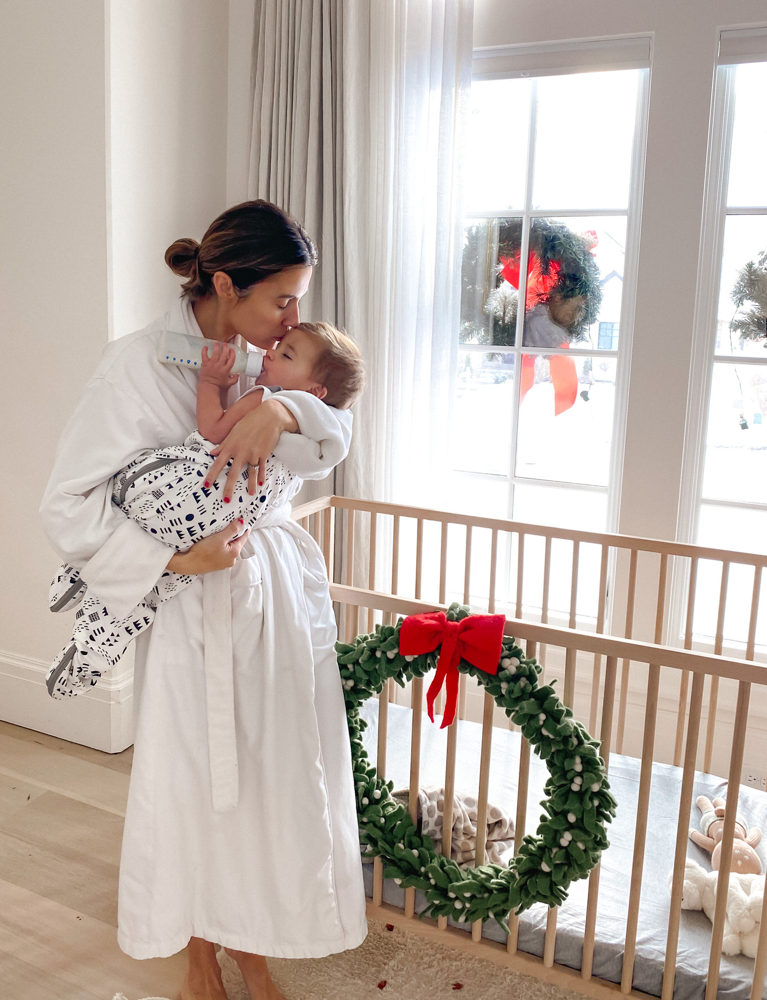
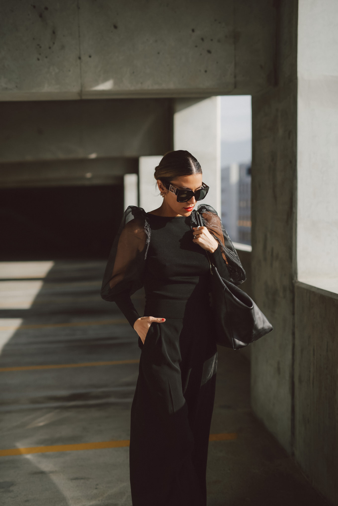
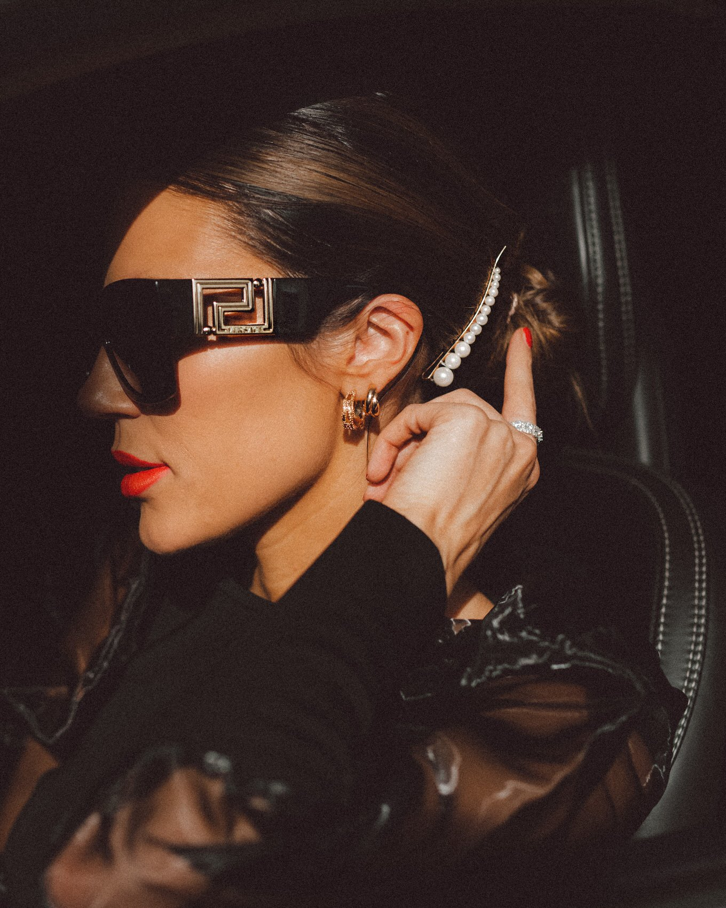
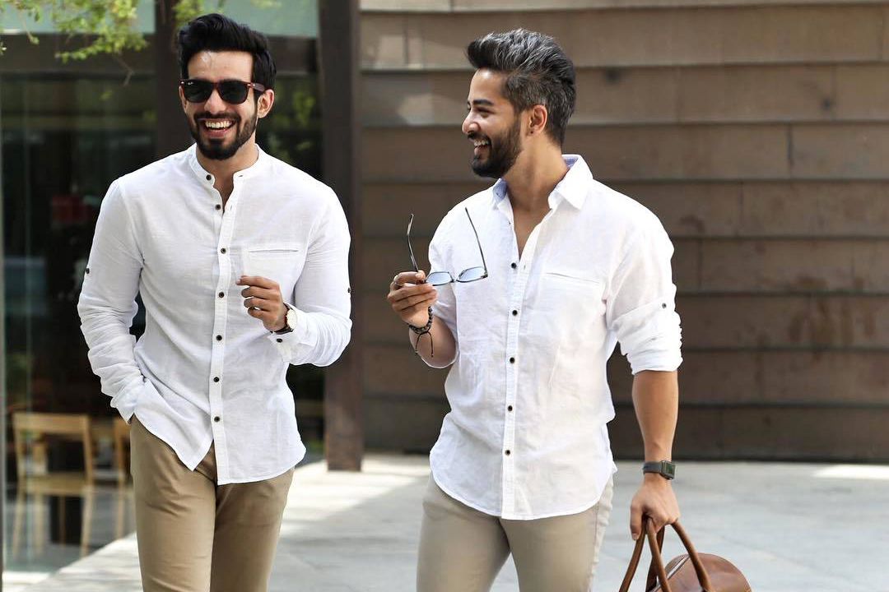
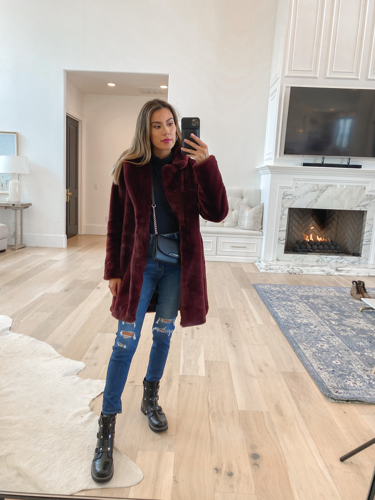
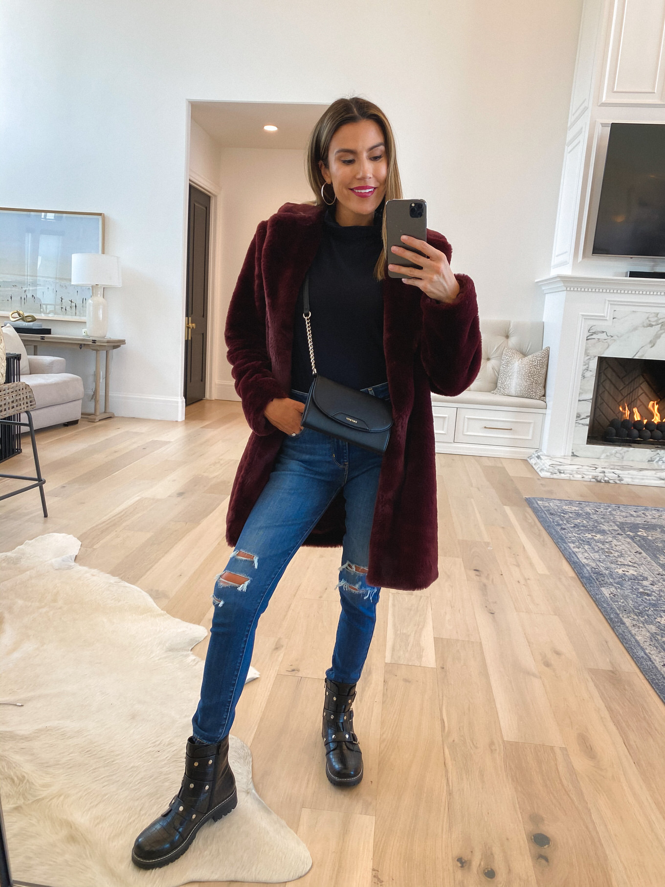
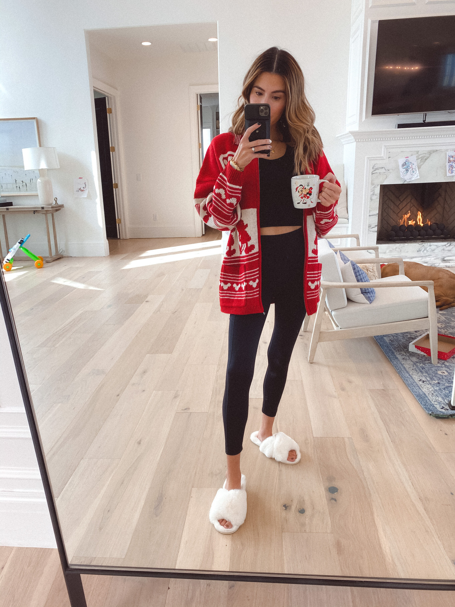
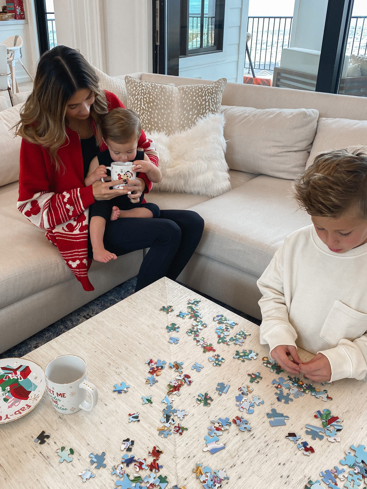
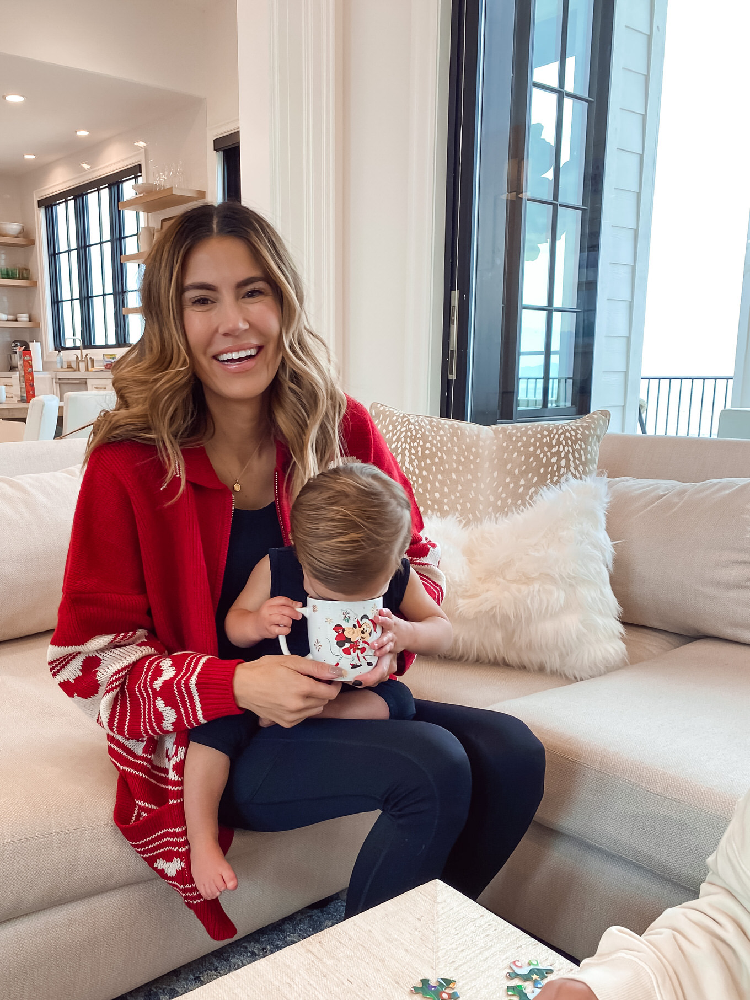

How to Start a Fashion Blog For free
MORNINGS WITH OLLIE
Love my mornings & early cuddles with Ollie!
He loves to look out the window and watch the cars go by.
When big trucks go by he makes a grunting noise it’s so funny.
I love the mornings with Ollie. He’s
extra cuddly when he first wakes up. He’s such a busier baby than Beckam was so I love the morning cuddles
while he’s still waking up, especially while he drinks his bottle. We are supposed to start weaning him off
the bottle and I’m not excited about it he never took a pacifier but he likes to suck on his empty bottle
like a pacifier so I’m kinda nervous to cut it out.
THE LUXURY WINTER ACCESSORY THAT’S TRENDING NOW
 No matter what you spend on your wardrobe, there are three pieces that can always elevate your look – shoes, handbags, and sunglasses. These are the things I invest in the most. The timeless pieces that will last for years. They make any outfit seem more high-end but also can make anyone feel more chic and put together. (Also just throwing this out there – between a good pair of sunglasses and a cute face mask, you’re pretty much guaranteed to look put together even when you’re not haha.) Sunglasses especially are my most-worn accessory year-round. Utah’s at a higher elevation so the sun is just as blinding in the winter as the summer (and it sometimes even worse when it’s reflecting off the snow). So I’ve learned to invest in high-quality sunglasses I love. Even if they are a splurge at first, I usually end up wearing them a ton so it comes out to a lower cost per wear than with other pieces I might only wear a handful of times.
Getting Tickets & Picking the Shows
If you're lucky or connected you can get an invite, sans the price tag. But I wasn't so lucky or connected my first 2 years so I'm here to help you out. First, plan out which shows are most important to you and make a schedule and this is a biggie: SET A BUDGET. If you're worrying about blowing your cash the whole time you won't have fun. Then check out prices, days, and times and prioritize the designers you want to see most. Lastly, purchase your tickets and get excited!
Dressing for The Shows
Always be true to your own sense of style, if you don't you'll be uncomfortable the whole time and it will show. Remember, NYFW is about expressing yourself and taking in what the designers have chosen to express through their new lines. Also it's important to wear shoes you'll be comfortable in all day. Obviously you want to look good, but you'll be on your feet all day long, so be prepared.
5 HOLIDAY OUTFIT IDEAS FOR THANKSGIVING OR CHRISTMAS
 Compare You can make any pair of jeans holiday-ready, just throw on a turtleneck, berry lip, and a luxe coat for a
cozy chic outfit. This coat is amazing and comes in two colors and such a good price point.
If you
like to dress up but keep comfy, think cozy knit sweater dresses. Not only does it bring a special occasion
vibe, it’s also beyond comfortable (not to mention forgiving). Love the full sleeves on this one and it’s on
sale right now under $30 right now and comes in 5 colors. Also love adding some scrunched socks with your
fall dresses for a more relaxed feel – these have been my go-to lately.
ADDING EXTRA MAGIC TO THE HOLIDAYS
  Last winter after Ollie was born and we were spending more time at home, we got in the habit of doing a new puzzle together as a family every month. The dropping temperatures have helped revive that tradition and it made me realize how much I missed having a puzzle out to work on with the kids. I told Mara to pick one out and they chose this Disney one. It has three different puzzle piece sizes – small, medium, and large – so it’s actually designed for everyone in the family to be able to enjoy together. We also got this Marvel Monopoly game that we broke in last weekend with Mara and Wes – such a fun twist on a classic fave!
I have been dying to take Ollie to Disney for his first time (well he was in my belly the first time but that doesn’t really count ;). I ordered a few more Disney pieces to bring some of the magic home and create some of those early Disney moments until he can go in person. Honestly I think it will make his first visit to Disney even more special tying in all the memories from home. (Like these Mickey Mouse waffles for breakfast!)